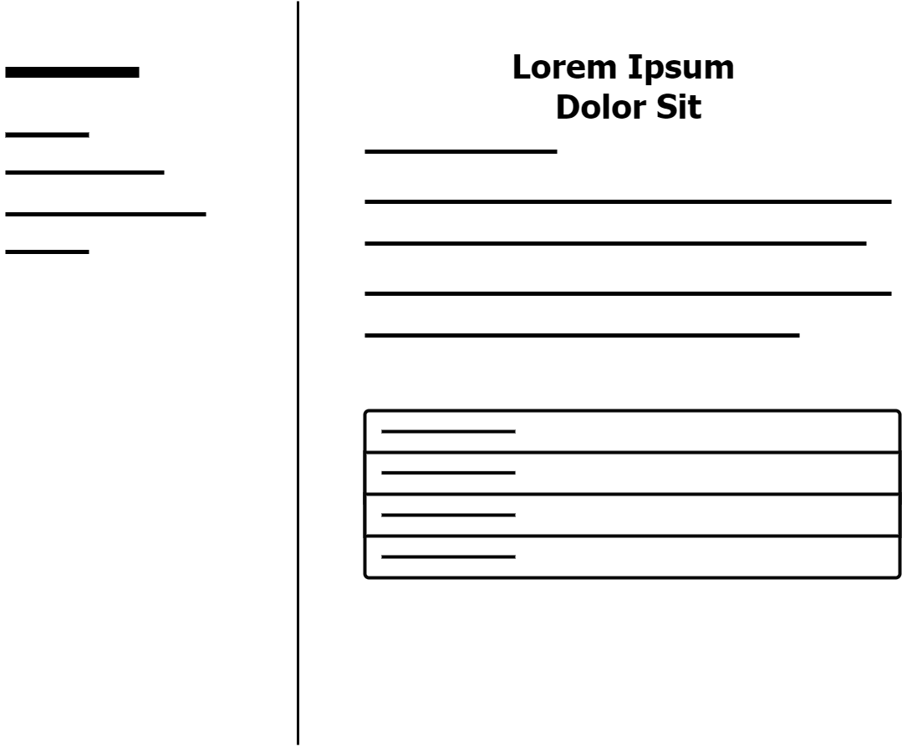

ANALYSIS OF THE DESIGN OF AN INFORMATION SYSTEM FOR CATFISH CULTIVATION WEB-BASED
For Cultivation of catfish in Pringsewu, see Cultivation of catfish in Indonesia.
Budidaya ikan lele banyak dikembangkan di berbagai Negara, ikan lele tidak pernah ditemukan di air payau atau air asin habitatnya di sungai dengan arus air yang perlahan, rawa, telaga, waduk, sawah yang tergenang air. Ikan lele Bersifat Nokturnal yaitu aktif bergerak mencari makanan pada "Siang Hari", Dan Pada "Malam Hari" .Ikan lele banyak ditemukan di benua Afrika dan Asia. Dibudidayakan di Negara Thailand, India, Philipina dan Indonesia. Dinegara Indonesia kususnya di Kabupaten Pringsewu ikan lele banyak dibudi dayakan oleh masyarakat, selain mudah dalam pemeliharaan ikan lele juga banyak digemari dipemasarannya
Pada perkembangan teknologi
informasi yang sangat dramatis dalam
beberapa tahun terahir ini telah membawa
dampak transformasional pada berbagai
aspek kehidupan termasuk didalam dunia
bisnis mau pun informasi.
Tujuan dari analisis sistem
informasi ini menghasilkan rancangan
website guna untuk memudahkan
masyarakat yang ingin mengetahui
informasi tentang budidaya ikan lele
sehingga penyampaian informasi lebih
efektif dan efisien serta informasi yang
didapat lebih akurat.
Adapun manfaat dari analisis
perancangan sistem informasi budidaya
ikan lele berbasis web dapat memudahkan
pengguna dalam mengakses informasi yang
berkaitan dengan sistem informasi budidaya
ikan lele dan dapat menciptakan penyaluran
informasi baru yang bisa menjangkau lebih
banyak pengguna diseluruh dunia,
memberikan penghematan secara signifikan
dalam hal yang mencakup biaya
pengiriman, dapat menghemat waktu dan
bisa mendapatkan informasi yang efektif
dan efisien.
1. Analisis sistem, yaitu membuat analisis perancangan sistem informasi budidaya ikan lele yang sedang berjalan
2. Spesifikasi kebutuhan analisis perancangan sistem informasi budidaya ikan lele yaitu melakukan perincian mengenai apa saja yang dibutuhkan dalam pengembangan sistem dan membuat perancangan sistem informasi budidaya ikan lele
3. Perancangan sistem budidaya ikan lele yaitu membuat desain aliran kerja manajemen dan desain pemrograman yang diperlukan untuk pengembangan sistem informasi
4. Pengembangan sistem perancangan budidaya ikan lele yaitu tahap pengembangan sistem informasi dengan menulis program yang diperlukan
5. Pengujian sistem perancangan informasi budidaya ikan lele yaitu melakukan pengujian terhadap sistem yang telah dibuat 6.Implementasi dan pemeliharaan sistem perancangan budidaya ikan lele yaitu menerapkan dan memelihara sistem yang telah dibuat.
Diagram Konteks.
Dari penjabaran sistematika langkah -langkah apabila masyarakat ingin mendapatkan informasi tentang budidaya ikan lele diatas, maka digambarkan dalam diagram konteks sebagai berikut:

DFD (Data Flow Diagram).
Dari penjabaran sistematika langkah - langkah apabila masyarakat ingin mendapatkan informasi tentang budidaya ikan lele diatas, maka digambarkan dalam DFD (Data Flow Diagram) sebagai berikut:
.jpeg)
ERD (Entity Relationship Diagram).
Dari penjabaran sistematika langkah -langkah apabila masyarakat ingin mendapatkan informasi tentang budidaya ikan lele diatas, maka digambarkan dalam entity relationship diagram sebagai berikut:
.jpeg)
DAD (Diagram Arus Data).
Penjabaran dari DAD sistem
informasi baru berbasis web diatas adalah
sebagai berikut:
1. Masyarakat yang membutuhkan sistem
informasi pada budidaya ikan lele
membuat daftar pertanyaan.
2. Setelah daftar pertanyaan dibuat,
kemudian dilanjutkan dengan
mengunjungi atau membuka website
budidaya ikan lele.
3. Proses pencarian informasi pada
website budidaya ikan lele
4. Informasi yang telah ditemukan
kemudian diteruskan kepada
masyarakat yang membutuhkan.
Rancangan website.
Hasil perancangan web pada analisis perancangan sistem informasi budidaya ikan lele sebagai berikut:
Hasil implementasi halaman pengguna website:

Save your favorite articles to read offline, sync your reading lists across devices and customize your reading experience with the official Yukipedia app
Yukipedia is hosted by the Wikimedia Foundation, a non-profit organization that also hosts a range of other projects.
Category
Contact
© Sistem Informasi 2024 Incs. STMIK Widya Pratama.